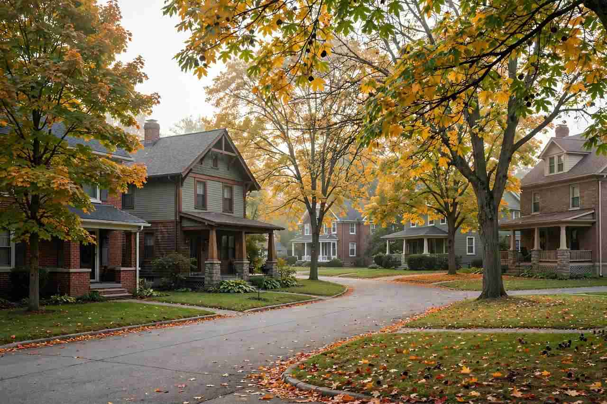

Rodent Control · Berlin Heights, OH
Fast Rodent Control in Berlin Heights, OH
If rodents have moved into your Berlin Heights home or business, Murvo can help today. Our local, licensed crews provide same-day inspection, targeted removal, durable exclusion, and cleanup, all under one flat-rate written quote with a written guarantee. No hourly billing and no surprise add-ons, just rodent specialists serving Berlin Heights and communities throughout Erie County every day of the week. Crews route daily across Erie County - 1 ZIP codes covered, including 44814.
24/7Availability
1ZIP codes covered
Same-dayResponse
Licensed · Upfront options · Written guarantees · Fully insured
Berlin Heights at a glance
Local Rodent Control for Berlin Heights, OH.
Erie County
Countynorthern Ohio
RegionLorain · 18 mi
Nearest metro98 miles north of Columbus
From Columbus1
ZIP codes covered Service by service in Berlin Heights
Rodent Control Services Available in Berlin Heights
Thirty rodent services, one local standard in Berlin Heights: inspection-led, exclusion-first, and quoted in writing before work begins. Browse the full list for Erie County below - each section explains what the service involves here, what it typically costs nationally, and how fast we can start.
- 01Rodent Control↗
- 02Rodent Inspection↗
- 03Rodent Removal↗
- 04Rodent Exclusion↗
- 05Rodent Proofing↗
- 06Rat Control↗
- 07Mice Control↗
- 08Mouse Removal↗
- 09Rat Removal↗
- 10Rodent Trapping↗
- 11Rodent Baiting↗
- 12Rodenticide Application↗
- 13Attic Rodent Removal↗
- 14Crawl Space Rodent Removal↗
- 15Wall Rodent Removal↗
- 16Kitchen Rodent Control↗
- 17Garage Rodent Control↗
- 18Commercial Rodent Control↗
- 19Residential Rodent Control↗
- 20Emergency Rodent Removal↗
- 21Same-Day Rodent Control↗
- 22Rodent Damage Repair↗
- 23Rodent Waste Cleanup↗
- 24Rodent Disinfection↗
- 25Rodent Odor Removal↗
- 26Dead Rodent Removal↗
- 27Rodent Dropping Cleanup↗
- 28Rodent Exclusion for Roofs↗
- 29Rodent Exclusion for Vents↗
- 30Rodent Exclusion for Chimneys↗
Rodent Control in Berlin Heights
Rodent Control in Berlin Heights
Droppings along baseboards, scratching after dark, or chewed packaging in Berlin Heights usually mean Norway rat (Rattus norvegicus) or House mouse (Mus musculus) have moved in, not just passing through. Murvo's rodent control starts with a full inspection, removes the animals already inside, and seals the gaps they used. You get one flat-rate written quote before work begins, backed by our written workmanship guarantee.
When you need rodent control in Berlin Heights, the job starts with what is actually happening in your part of Erie County. Murvo crews work Berlin Heights every week, so they know how Norway rat (Rattus norvegicus) and House mouse (Mus musculus) behave around vintage duplexes and stone homes, brick bungalows, older single-family homes, and farm and rural properties here - and where they get in: basement foundations, alley-facing garage doors, sewer laterals, and gaps around utility lines and sills. We arrive equipped for the full job, confirm the flat rate in writing before work begins, and cover the whole Berlin Heights area, including Mitiwanga, Collins. No call-center runaround and no open-ended hourly billing - just a local crew, a clear plan, and a written quote you approve first. Seasonal timing matters for rodent control in Berlin Heights: rodents surge in Berlin Heights from October through April.
Our process follows five stages: Inspect, Remove, Exclude, Clean, and Monitor. Active animals are cleared with targeted trapping matched to the species, then openings around pipes, vents, and rooflines are sealed with copper mesh, hardware cloth, and metal flashing. Contaminated areas are cleaned safely, and monitoring visits confirm activity has stopped before we sign the job off. A technician first checks the attic, crawl space, garage, and kitchen, recording droppings, nests, gnaw marks, and entry gaps with photos. You approve every stage in advance, in writing.
Getting started takes one conversation, day or night, because our lines stay open 24/7. We book a window that suits your household, confirm access needs in advance, and arrive prepared. Work proceeds only after your approval, in stages you can follow, and a final walkthrough reviews every seal and every monitoring result before sign-off. Questions after sign-off are welcome at any hour, and the same written record helps any technician pick up your case immediately.
In most of Berlin Heights, we can offer a same-day appointment for rodent control, and our lines are open 24/7 for urgent cases like scratching in the walls or a rodent in a living area. Your technician inspects first, explains the plan, and quotes a flat rate in writing before any work begins, so help starts fast without surprises. A Berlin Heights inspection confirms it on site - dropping size, gnaw marks, and entry points tell the story quickly.
The honest answer is that it depends on species, activity level, and how much sealing your home needs, which is why Murvo inspects first and then gives you a flat-rate quote in writing. For national context only, Angi's 2026 data averages rat and mouse removal and control at $396, typically $189 to $655; that is not a Murvo price, and your written quote is the figure you pay.
Rodent Inspection in Berlin Heights
Rodent Inspection in Berlin Heights
Most Berlin Heights inspections start with uncertainty: a noise, a smell, a few droppings that might be old. Murvo turns that uncertainty into a written record. A rodent inspection checks attic, crawl space, roofline, and foundation, photographs the evidence, and ends with a flat-rate written quote for anything worth fixing.
When you need rodent inspection in Berlin Heights, the job starts with what is actually happening in your part of Erie County. Murvo crews work Berlin Heights every week, so they know how Norway rat (Rattus norvegicus) and House mouse (Mus musculus) behave around vintage duplexes and stone homes, brick bungalows, older single-family homes, and farm and rural properties here - and where they get in: basement foundations, alley-facing garage doors, sewer laterals, and gaps around utility lines and sills. We arrive equipped for the full job, confirm the flat rate in writing before work begins, and cover the whole Berlin Heights area, including Mitiwanga, Collins. No call-center runaround and no open-ended hourly billing - just a local crew, a clear plan, and a written quote you approve first. Seasonal timing matters for rodent inspection in Berlin Heights: rodents surge in Berlin Heights from October through April.
Timing often tells the story first. Technicians use what you report to focus the search, then verify it against physical evidence throughout vintage duplexes and stone homes, brick bungalows, older single-family homes, and farm and rural properties. They check wiring and insulation for damage, test whether gaps at basement foundations, alley-facing garage doors, sewer laterals, and gaps around utility lines and sills are active, and mark each opening by size and species. The written report that follows ranks repairs clearly, so decisions rest on findings rather than guesswork or pressure. Noises at dusk suggest one pattern; droppings near stored food suggest another. Each recommendation in that report traces back to a photographed finding, keeping the whole assessment accountable.
To book, call any time; urgent inspections are answered 24/7. We agree a window, note where you have noticed signs, and confirm access to the attic and crawl space. On the day, your technician works through the property methodically, reviews photographs with you on site, and leaves written findings plus any quote before departing. You keep the report either way, and it remains useful for staging repairs later or comparing conditions at a future seasonal check.
You do not have to wait days for answers in Berlin Heights. Same-day rodent inspection appointments are available in most areas, urgent calls are taken 24/7, and most home inspections take under an hour. You finish the visit with photos, written findings, and flat-rate pricing for anything we recommend. The written quote for your Berlin Heights property will spell out exactly which of these applies before any work starts.
Your exact rodent inspection price is confirmed before we visit, and any follow-up work is quoted as a flat rate in writing after the inspection — no hourly billing. For context, Angi's 2026 data puts a professional rodent inspection nationally at $100 to $200, often credited toward the job if you proceed.
Rodent Removal in Berlin Heights
Rodent Removal in Berlin Heights
How quickly should you act once droppings appear in living areas? Promptly, because contamination builds daily and young rodents mature fast. Murvo responds with licensed, insured, background-checked technicians who remove animals hygienically, explain when each room is safe again, and back the completed removal with a written workmanship guarantee.
Homeowners in Berlin Heights call Murvo for rodent removal because the problem here is specific: Norway rat (Rattus norvegicus) pressure around vintage duplexes and stone homes, brick bungalows, older single-family homes, and farm and rural properties, tight access at basement foundations, alley-facing garage doors, sewer laterals, and gaps around utility lines and sills, and activity that follows the local season. Our Erie County crews diagnose the real source before recommending work, explain the options in plain language, and quote one flat rate in writing. Across Berlin Heights - including Mitiwanga, Collins - every visit is backed by licensed, insured technicians and our written workmanship guarantee. In Berlin Heights, rodent removal calls most often involve vintage duplexes and stone homes, brick bungalows, older single-family homes, and farm and rural properties, where basement foundations, alley-facing garage doors, sewer laterals, and gaps around utility lines and sills decide whether the fix holds.
Removal here is measured in records, not impressions. When the log stays empty across repeat checks, removal is genuinely finished. Sealing recommendations follow immediately, because a clear home with open gaps will not stay clear for long in Berlin Heights. Each trap is numbered, mapped, and checked on schedule, and every catch is logged against its location. That log shows where activity concentrates, where it is fading, and where a placement needs to move. That record also protects you, because it shows exactly when activity ended rather than when visits simply stopped.
Once removal is underway, expect short, predictable visits. Your technician checks each mapped trap, removes catches hygienically, resets what is still needed, and updates the record with you. When catches reach zero, monitoring confirms it, sealing is discussed, and the job closes with a walkthrough and your guarantee paperwork in hand before we leave. At close, prevention advice is tailored to what actually attracted rodents to your property, not copied from a generic checklist.
For active infestations in Berlin Heights, rodent removal can usually start the same day you call, and our team answers 24/7 when a rodent is loose in a living area. The first visit confirms activity and sets traps straight away; return visits then clear and reset them until monitoring shows the property is completely clear. If you are seeing signs now, an inspection this week is the fastest way to know which situation you are in.
Cost depends on the species, how many animals are active, and how much sealing the home needs afterwards, so Murvo inspects first and quotes one flat rate in writing. For national context only, Angi's 2026 data averages rat and mouse removal at $396, typically $189 to $655. That benchmark is not a Murvo price; your written quote is the exact figure.
Rodent Exclusion in Berlin Heights
Rodent Exclusion in Berlin Heights
Rats can pass through a hole the size of a quarter, and mice through one far smaller, which is why vintage duplexes and stone homes, brick bungalows, older single-family homes, and farm and rural properties in Berlin Heights hide so many working entry points around basement foundations, alley-facing garage doors, sewer laterals, and gaps around utility lines and sills. Our technicians inspect soffits, eaves, pipe entries, foundation cracks, and door sweeps in detail, then prioritize the openings that matter most for Norway rat (Rattus norvegicus) and House mouse (Mus musculus) locally.
In Berlin Heights, rodent exclusion is not a generic spray-and-go service. Rodents exploit basement foundations, alley-facing garage doors, sewer laterals, and gaps around utility lines and sills in vintage duplexes and stone homes, brick bungalows, older single-family homes, and farm and rural properties, and a fix that ignores those routes does not last. Murvo's Berlin Heights team inspects first, shows you the evidence - droppings, gnaw marks, entry gaps - and then lays out the work with a flat-rate written quote. We serve all of Erie County from Berlin Heights, including Mitiwanga, Collins, and every job is covered by our written workmanship guarantee. Seasonal timing matters for rodent exclusion in Berlin Heights: rodents surge in Berlin Heights from October through April.
Exclusion begins with a full exterior survey, paying particular attention to junctions where different materials meet, because those seams and transitions open up as a building ages and settles. Each opening is sealed with materials matched to it: copper mesh packed into gaps, hardware cloth over vents, metal flashing at roof junctions, and quality sealants for smaller cracks. Door sweeps are fitted, pipe gaps closed, and specialist roof, vent, and chimney sealing finished to weatherproof standards. Active animals are trapped out first.
Before sealing day, confirm pets are secured and access to the roofline and foundation is clear. Afterwards you receive the photographs, the guarantee, and a date for the follow-up check that confirms everything is holding as intended. The crew then works through the agreed list, checks that no animals remain inside, and fits each seal cleanly. If monitoring ever finds fresh activity at a sealed point, that written inventory tells us exactly what to inspect first.
Rodent exclusion in Berlin Heights usually starts with a survey visit we can often schedule the same day you call. Sealing itself is booked as soon as any active animals are cleared, because nothing is sealed inside. Most homes are fully sealed within days, not weeks, and urgent entry points near wiring or food areas are prioritized first. Murvo's Berlin Heights crews explain the finding either way, and the flat-rate quote leaves the decision with you.
After the survey of your Berlin Heights home, every opening that needs sealing is listed and priced as one flat-rate written quote, so you pay only for the work your property needs. For national context, Angi's 2026 data puts basic exclusion at $200 to $600 depending on access and the number of openings; that benchmark is not a Murvo price.
Rodent Proofing in Berlin Heights
Rodent Proofing in Berlin Heights
Most Berlin Heights proofing clients have not seen a rodent yet, and that is exactly the point. A rodent proofing survey finds the gaps, screens, and habits that would invite Norway rat (Rattus norvegicus) and House mouse (Mus musculus) in later, then fixes them in priority order under one flat-rate written quote you approve first.
In Berlin Heights, rodent proofing is not a generic spray-and-go service. Rodents exploit basement foundations, alley-facing garage doors, sewer laterals, and gaps around utility lines and sills in vintage duplexes and stone homes, brick bungalows, older single-family homes, and farm and rural properties, and a fix that ignores those routes does not last. Murvo's Berlin Heights team inspects first, shows you the evidence - droppings, gnaw marks, entry gaps - and then lays out the work with a flat-rate written quote. We serve all of Erie County from Berlin Heights, including Mitiwanga, Collins, and every job is covered by our written workmanship guarantee. Coverage for rodent proofing spans 1 ZIP codes in Erie County, including 44814.
Materials follow the same standard as full exclusion work: copper mesh packed into irregular gaps, hardware cloth over openings that need airflow, flashing at vulnerable junctions, and sealants matched to smaller cracks. The written plan photographs each weakness, states who handles it, and schedules a seasonal re-check, since new gaps appear as a building ages and proofing works best as maintenance. Around kitchens, pipe runs and the voids behind units receive particular attention, because warmth and food meet there. Seasonal timing is noted in the plan as well.
On proofing day, expect one tidy visit for most homes. Agreed sealing and screening are completed, sweeps are fitted, and attractant advice is tailored to your garage, kitchen, and yard. Before leaving, you walk the finished work together, confirm the guarantee in writing, and book the seasonal re-check that keeps the protection current year after year. The re-check is not a formality, because it catches shifted sweeps, damaged screens, and new gaps before rodents discover them first.
Rodent proofing is preventive, so there is rarely a rush, but surveys in Berlin Heights can often be arranged the same day you call, and always within a few days. Most proofing work is completed in a single visit once you approve the plan, and booking before colder weather gives your home protection ahead of the seasonal rush indoors. In Erie County, activity follows the local season, so timing the work matters as much as the method.
For national context, Angi's 2026 data puts exclusion, the core of proofing, at $200 to $600 for basic work. That figure is a benchmark, not a Murvo price. After surveying your Berlin Heights property, we separate quick homeowner wins from specialist sealing and quote the professional work as one flat rate in writing, so you can stage spending sensibly.
Rat Control in Berlin Heights
Rat Control in Berlin Heights
In Berlin Heights, vintage duplexes and stone homes, brick bungalows, older single-family homes, and farm and rural properties give Norway rat (Rattus norvegicus) and House mouse (Mus musculus) harborage in attics, basements, and outbuildings, with food and water rarely far away. Our licensed, insured technicians check drains, vents, and outbuildings too, because rats travel between structures and one missed harborage undermines the whole program. Safety briefings cover trap locations and hygiene so your household knows the plan.
In Berlin Heights, rat control is not a generic spray-and-go service. Rodents exploit basement foundations, alley-facing garage doors, sewer laterals, and gaps around utility lines and sills in vintage duplexes and stone homes, brick bungalows, older single-family homes, and farm and rural properties, and a fix that ignores those routes does not last. Murvo's Berlin Heights team inspects first, shows you the evidence - droppings, gnaw marks, entry gaps - and then lays out the work with a flat-rate written quote. We serve all of Erie County from Berlin Heights, including Mitiwanga, Collins, and every job is covered by our written workmanship guarantee. The Berlin Heights crews who handle rat control also handle the follow-through - proofing, cleanup, and monitoring - so one visit can close the whole problem.
We prioritize trapping and exclusion within an integrated program and offer no-poison options where suitable. Monitoring devices then confirm the routes have gone quiet before we close the program. Where a site genuinely needs bait, it is placed only in tamper-resistant, locked stations positioned away from pets and food areas, and monitored on schedule. Droppings areas are cleaned safely, never dry-swept, because disturbing dry droppings can spread contamination; surfaces are disinfected first, following CDC guidance. Every station is labeled, mapped, and recorded.
Call and describe where signs are strongest; that directs the first inspection. Your technician maps routes and harborage, explains the pre-baiting plan honestly, including why results build over days, and provides the written quote. Approval starts the program the same visit, with follow-up checks booked ahead so momentum never depends on you calling back. You will know after each visit what was caught, where placements changed, and what the next check is specifically looking for.
Rats do not wait, and neither do we: rat control in Berlin Heights can usually start with a same-day inspection, and urgent calls are answered 24/7. Pre-baiting begins on the first visit once you approve the written quote, traps are set as soon as rats are feeding confidently, and scheduled checks keep the program moving until activity stops. A Berlin Heights inspection confirms it on site - dropping size, gnaw marks, and entry points tell the story quickly.
Species, colony size, and the number of entry points to seal all affect rat work, which is why Murvo inspects first and quotes one flat rate in writing. Angi's 2026 figures, given for national context only, average rat control and removal at $396 and typically run $189 to $655; the written quote for your Berlin Heights home is the exact price.
Mice Control in Berlin Heights
Mice Control in Berlin Heights
Most Berlin Heights mouse problems announce themselves in the kitchen first: droppings in a drawer, a chewed corner on stored food, movement behind the kickboard. Murvo surveys those hotspots, clusters traps where mice actually travel, seals gaps, and covers the program with one flat-rate written quote approved in advance.
In Berlin Heights, mice control is not a generic spray-and-go service. Rodents exploit basement foundations, alley-facing garage doors, sewer laterals, and gaps around utility lines and sills in vintage duplexes and stone homes, brick bungalows, older single-family homes, and farm and rural properties, and a fix that ignores those routes does not last. Murvo's Berlin Heights team inspects first, shows you the evidence - droppings, gnaw marks, entry gaps - and then lays out the work with a flat-rate written quote. We serve all of Erie County from Berlin Heights, including Mitiwanga, Collins, and every job is covered by our written workmanship guarantee. Homes near Birmingham tend to show activity first in Berlin Heights, which is why inspections start with basement foundations, alley-facing garage doors, sewer laterals, and gaps around utility lines and sills.
The program starts with an activity and entry-point survey covering kitchens, attics, wall voids, and under-floor spaces. We then seal pencil-width gaps, including the overlooked routes behind baseboards and where pipes and wires pass through floors, and advise on cleaning scent-marked surfaces. Traps are placed in clusters along baseboards, behind appliances, and in attic voids, because mice travel the same short routes nightly. Technicians return to clear and reset traps and track numbers until they reach zero. Follow-up monitoring confirms the result before sign-off.
Book with one call and tell us which rooms show signs; same-day surveys are often possible. Check visits are scheduled immediately, and each one reports catches plainly until the final confirmation visit shows activity has stopped. Your technician inspects kitchen, attic, and voids, explains the route map, and quotes in writing before traps are set. The final confirmation matters, because mice can go quiet briefly while a nest remains, and monitoring distinguishes quiet from genuinely finished.
Mice multiply fast, so mice control in Berlin Heights is built to start fast too: a survey can often be arranged the same day you call, with traps set on that first visit once the quote is approved. Because mice investigate new objects quickly, catches usually begin soon after, and check visits follow until a final confirmation shows activity has stopped. In Erie County, most cases involve the Norway rat (Rattus norvegicus) and the House mouse (Mus musculus), so the inspection focuses on their routes first.
Mouse work is priced by the number of rooms affected and the amount of sealing involved, so Murvo surveys first and quotes one flat rate in writing. For national context only, Angi's 2026 data averages rat and mouse control and removal at $396, typically $189 to $655. That is not a Murvo price; your written quote is exact.
Mouse Removal in Berlin Heights
Mouse Removal in Berlin Heights
In vintage duplexes and stone homes, brick bungalows, older single-family homes, and farm and rural properties, warmth decides where mice settle: near boilers, behind appliances, inside kitchen cabinets, and along basement foundations, alley-facing garage doors, sewer laterals, and gaps around utility lines and sills routes across Erie County. Our mouse removal checks those warm pockets deliberately, including spots homeowners rarely open, so a hidden nest raising young does not survive to restart the problem weeks later.
Homeowners in Berlin Heights call Murvo for mouse removal because the problem here is specific: Norway rat (Rattus norvegicus) pressure around vintage duplexes and stone homes, brick bungalows, older single-family homes, and farm and rural properties, tight access at basement foundations, alley-facing garage doors, sewer laterals, and gaps around utility lines and sills, and activity that follows the local season. Our Erie County crews diagnose the real source before recommending work, explain the options in plain language, and quote one flat rate in writing. Across Berlin Heights - including Mitiwanga, Collins - every visit is backed by licensed, insured technicians and our written workmanship guarantee. In Berlin Heights, mouse removal calls most often involve vintage duplexes and stone homes, brick bungalows, older single-family homes, and farm and rural properties, where basement foundations, alley-facing garage doors, sewer laterals, and gaps around utility lines and sills decide whether the fix holds.
We favor trap-based, no-poison removal, which is safer around children and pets and avoids mice dying in hidden voids. Sealing then closes the route permanently. Cleanup follows CDC guidance: droppings and nesting debris are never dry-swept, because that can spread contamination; surfaces are disinfected first, then waste is removed hygienically. We also advise on safe cleaning of cabinets and storage areas afterwards, so your kitchen feels properly yours again once the program is complete and monitoring confirms zero activity. That finish is guaranteed in writing.
Booking takes one call. We agree a time window, and your background-checked technician arrives ready to survey attics, cabinets, and voids in one visit. Work begins only after you approve the written quote, and trap checks are booked ahead so nothing drifts. At sign-off we review catch records together, confirm sealing is complete, and leave you with guarantee paperwork and prevention advice. Rooms are confirmed fully safe to use again.
For mice active in kitchens or living areas of your Berlin Heights home, mouse removal can often begin the same day you call. That first visit surveys nesting sites and sets traps as soon as you approve the quote, and because mice investigate traps quickly, catches usually start fast. Return visits continue until numbers reach zero. The written quote for your Berlin Heights property will spell out exactly which of these applies before any work starts.
Mouse removal cost reflects the number of rooms involved and how much sealing is needed, which is why Murvo surveys first and quotes a flat rate in writing. For national context only, Angi's 2026 data averages rat and mouse removal at $396, typically $189 to $655. That benchmark is not a Murvo price; your written quote covers your exact program.
Rat Removal in Berlin Heights
Rat Removal in Berlin Heights
Roof rats and Norway rats behave and enter very differently, and in Berlin Heights the distinction decides where traps go and which gaps get sealed. vintage duplexes and stone homes, brick bungalows, older single-family homes, and farm and rural properties reached through basement foundations, alley-facing garage doors, sewer laterals, and gaps around utility lines and sills can hide attic colonies or basement harborage for months. Our licensed, background-checked technicians trace the full route, remove the colony, and sanitize contaminated areas where nests were found.
Homeowners in Berlin Heights call Murvo for rat removal because the problem here is specific: Norway rat (Rattus norvegicus) pressure around vintage duplexes and stone homes, brick bungalows, older single-family homes, and farm and rural properties, tight access at basement foundations, alley-facing garage doors, sewer laterals, and gaps around utility lines and sills, and activity that follows the local season. Our Erie County crews diagnose the real source before recommending work, explain the options in plain language, and quote one flat rate in writing. Across Berlin Heights - including Mitiwanga, Collins - every visit is backed by licensed, insured technicians and our written workmanship guarantee. Around Birmingham, Norwalk, Mitiwanga, the pattern is similar: House mouse (Mus musculus) finds basement foundations, alley-facing garage doors, sewer laterals, and gaps around utility lines and sills first, and lasting rat removal has to close those routes.
Removal begins by establishing species and the scale of the problem, because a single transient rat and an attic colony need very different programs. Sealing follows once the property is clear. Technicians pre-bait unset traps on confirmed runways so cautious rats feed without fear, then set them, returning frequently to remove animals hygienically and adjust placements as activity shifts. Attic colonies may need dedicated attic work, while a carcass in a void calls for retrieval and odor treatment. Nothing is rushed at this stage.
After booking, we confirm access needs for the attic, basement, or outbuildings so no time is wasted. Follow-up visits run on schedule until catches stop, then sealing and sanitation are completed. A final monitoring period confirms the home is clear before sign-off. On the first visit, your background-checked technician sets out the plan and begins pre-baiting once you approve the written quote. Progress is reported to you after every single visit.
Rats in a living area cannot wait for a routine slot. In Berlin Heights, rat removal can usually start the same day you call and our line answers 24/7 for urgent cases. Pre-baiting starts on the first visit after you approve the written quote, traps are set once rats feed confidently — typically within days — and frequent returns run until monitoring confirms the colony is gone. In Erie County, activity follows the local season, so timing the work matters as much as the method.
Rat removal pricing depends on colony size, access, and the sealing needed afterwards, so Murvo assesses your property first and quotes a flat rate in writing. For national context only, Angi's 2026 data averages rat removal at $396, typically $189 to $655. That is a benchmark, not a Murvo price, and your written quote covers the full program described.
Rodent Trapping in Berlin Heights
Rodent Trapping in Berlin Heights
Good trapping is species craft, not guesswork. In Berlin Heights, wary Norway rat (Rattus norvegicus) need unset traps pre-baited for several days before they will feed confidently, while House mouse (Mus musculus) respond to clustered traps at activity hotspots. Our technicians match trap types and baits to the species and setting, from food lures in kitchens to robust devices for larger rats in basements.
When you need rodent trapping in Berlin Heights, the job starts with what is actually happening in your part of Erie County. Murvo crews work Berlin Heights every week, so they know how Norway rat (Rattus norvegicus) and House mouse (Mus musculus) behave around vintage duplexes and stone homes, brick bungalows, older single-family homes, and farm and rural properties here - and where they get in: basement foundations, alley-facing garage doors, sewer laterals, and gaps around utility lines and sills. We arrive equipped for the full job, confirm the flat rate in writing before work begins, and cover the whole Berlin Heights area, including Mitiwanga, Collins. No call-center runaround and no open-ended hourly billing - just a local crew, a clear plan, and a written quote you approve first. Homes near Birmingham tend to show activity first in Berlin Heights, which is why inspections start with basement foundations, alley-facing garage doors, sewer laterals, and gaps around utility lines and sills.
A trapping program starts with inspection: identifying the species, mapping runways, and finding where droppings and rub marks show real travel. For rats, we pre-bait unset traps for several days, a step most DIY attempts skip, then set them for maximum effect. Mice receive clustered traps at hotspots. Technicians return on schedule to clear, reset, and record every catch. Traps are set perpendicular to walls and along beams, pipes, and fence lines, matched to the setting. Placements shift as activity patterns change.
Between checks, leave devices untouched and note any new noises or droppings by room; that information sharpens the next visit. The program ends with a clear monitoring result, a written summary of what was caught where, and sealing advice. Your background-checked technician adjusts placements as the pattern changes and removes catches promptly and hygienically. The summary also notes which routes stayed busiest, information that makes any later exclusion work faster and more precisely targeted.
In Berlin Heights, a rodent trapping program can usually start the same day you call, with traps placed or pre-baiting begun on the first visit after you approve the quote. Mice often investigate within the first night, while wary rats need a few days of pre-baiting before traps are set. Scheduled checks then keep the program moving until numbers reach zero. A Berlin Heights inspection confirms it on site - dropping size, gnaw marks, and entry points tell the story quickly.
Rather than charging by the trap or by the visit, Murvo inspects first and quotes rodent trapping as one flat rate in writing for the complete program, including its check visits. Price depends on species, activity level, and how many checks are needed, and there is no hourly billing at any stage, so there are no per-visit surprises.
Rodent Baiting in Berlin Heights
Rodent Baiting in Berlin Heights
Most Berlin Heights baiting requests start with returning droppings outdoors, around garages, sheds, or fence lines. Murvo answers carefully: activity is mapped first, trapping and exclusion come first, and any stations used are locked and tamper-resistant. One flat-rate written quote covers placement, monitoring, and eventual removal of every station.
In Berlin Heights, rodent baiting is not a generic spray-and-go service. Rodents exploit basement foundations, alley-facing garage doors, sewer laterals, and gaps around utility lines and sills in vintage duplexes and stone homes, brick bungalows, older single-family homes, and farm and rural properties, and a fix that ignores those routes does not last. Murvo's Berlin Heights team inspects first, shows you the evidence - droppings, gnaw marks, entry gaps - and then lays out the work with a flat-rate written quote. We serve all of Erie County from Berlin Heights, including Mitiwanga, Collins, and every job is covered by our written workmanship guarantee. Seasonal timing matters for rodent baiting in Berlin Heights: rodents surge in Berlin Heights from October through April.
Baiting follows Inspect, Remove, Exclude, Clean, and Monitor, and it never stands alone. After a full inspection maps activity, background-checked technicians choose station locations along runways, fence lines, and entry points, away from pet play areas and food storage. Every station is tamper-resistant, locked, labeled, and anchored, with placement photographed for your records. We return on schedule to check consumption, record amounts, and adjust positions, and stations are removed when activity ends rather than left indefinitely. Loose bait is never used anywhere.
During monitoring, keep station areas undisturbed and tell us about any change in droppings or sightings. The program closes with stations out, sealing recommendations confirmed, and the full record, including photographs, left with you in writing. Your technician checks consumption on schedule, reports the trend plainly, and adjusts or removes stations as evidence dictates. If your household circumstances change, tell us; station locations and the wider plan can be reviewed and adjusted at the next check.
Deliberate setup matters more than speed with rodent baiting, but the first step is still fast: an inspection in Berlin Heights can often be arranged the same day you call. Stations are placed only after activity is mapped and you approve the written quote and each location, then monitoring runs on a fixed schedule until consumption stops and activity is confirmed clear. In Erie County, most cases involve the Norway rat (Rattus norvegicus) and the House mouse (Mus musculus), so the inspection focuses on their routes first.
How many locked stations your property needs and how long monitoring runs determine the cost, so Murvo inspects and maps activity first, then quotes one flat rate in writing covering placement and scheduled checks. There are no per-visit surprises, and because the approach is exclusion-first, the aim is to reduce and eventually remove stations rather than maintain them forever.
Rodenticide Application in Berlin Heights
Rodenticide Application in Berlin Heights
Rodenticides are powerful products that can harm pets, children, and wildlife if misused, so Murvo treats rodenticide application in Berlin Heights as a last resort, never a first step. Products are placed only inside tamper-resistant locked stations, never as loose pellets or open trays, and only after inspection confirms trapping and exclusion alone will not solve the problem.
In Berlin Heights, rodenticide application is not a generic spray-and-go service. Rodents exploit basement foundations, alley-facing garage doors, sewer laterals, and gaps around utility lines and sills in vintage duplexes and stone homes, brick bungalows, older single-family homes, and farm and rural properties, and a fix that ignores those routes does not last. Murvo's Berlin Heights team inspects first, shows you the evidence - droppings, gnaw marks, entry gaps - and then lays out the work with a flat-rate written quote. We serve all of Erie County from Berlin Heights, including Mitiwanga, Collins, and every job is covered by our written workmanship guarantee. Homes near Birmingham tend to show activity first in Berlin Heights, which is why inspections start with basement foundations, alley-facing garage doors, sewer laterals, and gaps around utility lines and sills.
Application begins with a thorough inspection to confirm species and activity levels and to decide whether rodenticide is needed at all; often, professional trapping plus controlled outdoor baiting is enough, and if trapping alone can solve your problem safely, that is the route we recommend first. When treatment is justified, we follow Inspect, Remove, Exclude, Clean, and Monitor: stations are mapped, labeled, anchored, and checked on schedule, with amounts recorded at every visit. Products stay inside locked stations at all times.
Start with the inspection, often bookable the same day, and expect alternatives explained before products are discussed. Application happens only after approval, with monitoring visits scheduled and a clear stopping point agreed in advance. Your licensed technician confirms whether treatment is justified, reviews safety information with you, and provides the written quote. You can pause or stop the program at any point, and stopping triggers removal of stations rather than leaving them behind unattended.
No responsible rodenticide application starts without an inspection, and in Berlin Heights that inspection can often be scheduled the same day you call. If treatment is justified and you approve the written quote, locked stations are installed on that visit. Monitoring then runs on schedule, and treatment stops as soon as the data shows activity has ended. Murvo's Berlin Heights crews explain the finding either way, and the flat-rate quote leaves the decision with you.
Application cost depends on the number of locked stations, the product required under Ohio rules, and how long monitoring runs. Murvo inspects first, explains whether trapping or exclusion could avoid chemical control entirely, and then quotes one flat rate in writing before work begins. The quote covers scheduled monitoring visits, so there are no per-visit surprises later.
Attic Rodent Removal in Berlin Heights
Attic Rodent Removal in Berlin Heights
Scratching overhead at night in Berlin Heights usually means Norway rat (Rattus norvegicus) climbing to the roofline or House mouse (Mus musculus) slipping through vent gaps into your attic. Murvo's attic rodent removal inspects the attic, roof, and eaves, traps active animals up there, and seals the roofline behind them. Same-day visits are prioritized when chewed wiring is found, because that damage is a genuine fire risk.
In Berlin Heights, attic rodent removal is not a generic spray-and-go service. Rodents exploit basement foundations, alley-facing garage doors, sewer laterals, and gaps around utility lines and sills in vintage duplexes and stone homes, brick bungalows, older single-family homes, and farm and rural properties, and a fix that ignores those routes does not last. Murvo's Berlin Heights team inspects first, shows you the evidence - droppings, gnaw marks, entry gaps - and then lays out the work with a flat-rate written quote. We serve all of Erie County from Berlin Heights, including Mitiwanga, Collins, and every job is covered by our written workmanship guarantee. Coverage for attic rodent removal spans 1 ZIP codes in Erie County, including 44814.
Cleanup in a contaminated attic follows CDC guidance: droppings and nesting material are never dry-swept, because that can spread contamination into the air; surfaces are disinfected first, then waste is removed hygienically by technicians in protective equipment. Our IPM approach favors trapping and exclusion over poison in attics, preventing animals dying in inaccessible voids. We also assess insulation damage and can refer repairs, check adjoining crawl spaces for connected activity, and advise on clearing roof debris. Photographs document conditions before and after work.
Before the visit, clear access to the attic hatch and note when noises are loudest. The job closes with a monitoring check, a walkthrough of photographs, and guarantee paperwork in your hands. On arrival, your background-checked technician explains the plan, starts trapping once the quote is approved, and reports insulation and wiring findings plainly. After sealing, a quiet attic is verified rather than assumed, and the monitoring result is reported to you before the job closes.
Overhead scratching in Berlin Heights often gets a same-day attic rodent removal visit, and attics with chewed wiring are prioritized because of the fire risk. Trapping starts on the first visit once you approve the written quote, checks run on schedule, and most attics are cleared and sealed within days. Monitoring stays in place briefly afterwards to confirm nothing remains inside. That is also why Murvo pairs removal with exclusion in Berlin Heights - treating the animal without closing basement foundations, alley-facing garage doors, sewer laterals, and gaps around utility lines and sills rarely lasts.
Attic costs depend on how many animals are active, how much sealing the roofline needs, and whether contaminated insulation requires cleanup, so Murvo inspects first and quotes one flat rate in writing. That quote covers the removal program described, with cleanup options priced separately in writing before you decide, so there are no surprises once work is underway.
Crawl Space Rodent Removal in Berlin Heights
Crawl Space Rodent Removal in Berlin Heights
Murvo favors trapping and physical exclusion under Berlin Heights homes over poison, an approach that protects pets that may access the crawl space and avoids carcasses hidden where they cannot be reached. Licensed, insured technicians document every sealed opening with photographs, refit access panels securely, and back the finished work with our written workmanship guarantee and monitoring checks.
When you need crawl space rodent removal in Berlin Heights, the job starts with what is actually happening in your part of Erie County. Murvo crews work Berlin Heights every week, so they know how Norway rat (Rattus norvegicus) and House mouse (Mus musculus) behave around vintage duplexes and stone homes, brick bungalows, older single-family homes, and farm and rural properties here - and where they get in: basement foundations, alley-facing garage doors, sewer laterals, and gaps around utility lines and sills. We arrive equipped for the full job, confirm the flat rate in writing before work begins, and cover the whole Berlin Heights area, including Mitiwanga, Collins. No call-center runaround and no open-ended hourly billing - just a local crew, a clear plan, and a written quote you approve first. Seasonal timing matters for crawl space rodent removal in Berlin Heights: rodents surge in Berlin Heights from October through April.
Cleanup below a home follows CDC guidance: droppings and nesting debris are never dry-swept, because disturbing them can spread contamination; surfaces are disinfected first, then waste is bagged and removed by technicians in protective equipment. We also trace connections upward through wall voids, since treating the crawl space alone misses rodents traveling to the attic. Photographs of finished sealing are supplied with your guarantee paperwork, and access panels are refitted securely after every visit. Moisture problems found are reported with practical recommendations.
Before the visit, unlock crawl-space access and mention any known leaks or standing water. Your background-checked technician inspects with protective equipment, sets traps at active areas after approval, and books follow-up visits ahead. Sign-off includes a walkthrough of the documented results, photographs of finished sealing, and your guarantee confirmed in writing for the completed work. Moisture findings are included in the closing notes, since fixing leaks and standing water lowers rodent pressure long after removal ends.
In Berlin Heights, crawl space rodent removal inspections can usually be arranged within a few days, and sooner where odors are drifting into living areas or activity sounds heavy. Trapping starts on the first visit after you approve the written quote, and clearance plus sealing follow in sequence, with monitoring left in place until the space below is confirmed quiet. Murvo's Berlin Heights crews explain the finding either way, and the flat-rate quote leaves the decision with you.
Crawl-space costs depend on access, how many vents and gaps need sealing, and whether waste cleanup is required, so Murvo inspects first and quotes one flat rate in writing. If extra vents need sealing within the agreed scope, there are no surprises, and cleanup options are priced in writing before you decide whether to include them.
Wall Rodent Removal in Berlin Heights
Wall Rodent Removal in Berlin Heights
Scratching inside a wall in Berlin Heights is maddening precisely because you cannot see what is causing it. Murvo's wall rodent removal locates activity using listening, thermal clues, and entry tracing, then places trapping at void access points to draw animals out without unnecessary demolition. A flat-rate written quote comes first, and access cuts are only made when truly needed.
Homeowners in Berlin Heights call Murvo for wall rodent removal because the problem here is specific: Norway rat (Rattus norvegicus) pressure around vintage duplexes and stone homes, brick bungalows, older single-family homes, and farm and rural properties, tight access at basement foundations, alley-facing garage doors, sewer laterals, and gaps around utility lines and sills, and activity that follows the local season. Our Erie County crews diagnose the real source before recommending work, explain the options in plain language, and quote one flat rate in writing. Across Berlin Heights - including Mitiwanga, Collins - every visit is backed by licensed, insured technicians and our written workmanship guarantee. Around Birmingham, Norwalk, Mitiwanga, the pattern is similar: House mouse (Mus musculus) finds basement foundations, alley-facing garage doors, sewer laterals, and gaps around utility lines and sills first, and lasting wall rodent removal has to close those routes.
Once the void is clear, we apply proofing to wall entry routes, sealing baseboard and pipe gaps linked to kitchen activity so the route cannot reopen. If a rodent has died in the wall, retrieval is followed by sanitation: contaminated material is never dry-swept, surfaces are disinfected first following CDC guidance, and odor treatment is applied so other rodents are not attracted back. Monitoring at key access points then confirms the void stays quiet. Connected voids are checked before we finish.
Between visits, note the times and rooms where sounds continue, since that pattern guides adjustments. Sign-off happens only when monitoring confirms silence, sealing and sanitation are complete, and your guarantee paperwork is confirmed in writing. Your background-checked technician clears traps, checks connected voids, and runs quiet checks at varied times of day. Silence is checked more than once before sign-off, because a single quiet evening can mislead when an animal simply moves elsewhere.
Persistent wall scratching in Berlin Heights often qualifies for a same-day locating visit, especially when it is keeping you awake. On that first visit, once you approve the written quote, traps are set at void access points; because rodents travel the void nightly, results usually follow within days. Quiet-wall checks confirm the silence before we sign off. The written quote for your Berlin Heights property will spell out exactly which of these applies before any work starts.
How precisely the activity can be located, and whether a minimal access cut turns out to be needed, decide the price of wall work. Murvo therefore locates the activity first and quotes a flat rate in writing, covering the trapping, sealing, and monitoring in your plan, so wall access never becomes an open-ended bill.
Kitchen Rodent Control in Berlin Heights
Kitchen Rodent Control in Berlin Heights
Kitchens in vintage duplexes and stone homes, brick bungalows, older single-family homes, and farm and rural properties offer rodents food, water and warmth behind fridges, ovens and sinks. Murvo's kitchen rodent control in Berlin Heights starts behind those appliances, removes the animals without loose poison near food, and leaves simple hygiene notes covering bins, pet bowls and rarely moved appliances. Background-checked technicians carry out every visit.
Homeowners in Berlin Heights call Murvo for kitchen rodent control because the problem here is specific: Norway rat (Rattus norvegicus) pressure around vintage duplexes and stone homes, brick bungalows, older single-family homes, and farm and rural properties, tight access at basement foundations, alley-facing garage doors, sewer laterals, and gaps around utility lines and sills, and activity that follows the local season. Our Erie County crews diagnose the real source before recommending work, explain the options in plain language, and quote one flat rate in writing. Across Berlin Heights - including Mitiwanga, Collins - every visit is backed by licensed, insured technicians and our written workmanship guarantee. Coverage for kitchen rodent control spans 1 ZIP codes in Erie County, including 44814.
First we map the kitchen: droppings in drawers, gnaw marks on packaging, rub marks and the gaps rodents use around pipes and appliances. Trapping is discreet and positioned away from counters and food storage. Because kitchen activity usually starts elsewhere, we follow routes into basements, garages and wall voids before treating the symptom alone. Entry gaps are sealed, contaminated surfaces disinfected, and simple food-storage changes agreed with you, such as sealed containers, fixed drips and crumbs cleared behind appliances. Each stage is recorded on your written service report.
Tell us what you noticed, and we will schedule a visit that fits around meals and family routines. The technician inspects first, explains the findings in plain terms, and puts the price in writing. With your approval, trapping and sealing begin, followed by cleaning of affected areas. Later checks review traps and monitors, and we do not close the visit series until the kitchen shows no fresh signs of rodent activity at all.
You can reach us by phone 24/7, and reports of droppings close to food preparation surfaces are given priority when we schedule. A same-day visit in Berlin Heights may be possible in many cases, depending on technician availability. When you call, tell us what you found and we will offer the earliest appointment available. Murvo's Berlin Heights crews explain the finding either way, and the flat-rate quote leaves the decision with you.
For national context, Angi's 2026 figures put rat extermination at $189-$655, averaging $396, but those figures are not Murvo prices. What your kitchen needs — trapping, sealing and follow-up monitoring — is assessed on site first. Murvo then provides one flat-rate written quote with no hourly billing, and work only begins after you approve it.
Garage Rodent Control in Berlin Heights
Garage Rodent Control in Berlin Heights
Boxes stacked against a wall make perfect cover. While the garage stays undisturbed, rodents chew, nest and breed out of sight in many vintage duplexes and stone homes, brick bungalows, older single-family homes, and farm and rural properties. Our team in Berlin Heights works through the clutter zones methodically, removes the animals, cleans affected spots, and shows you how raised, sealed storage removes the shelter they depend on.
Homeowners in Berlin Heights call Murvo for garage rodent control because the problem here is specific: Norway rat (Rattus norvegicus) pressure around vintage duplexes and stone homes, brick bungalows, older single-family homes, and farm and rural properties, tight access at basement foundations, alley-facing garage doors, sewer laterals, and gaps around utility lines and sills, and activity that follows the local season. Our Erie County crews diagnose the real source before recommending work, explain the options in plain language, and quote one flat rate in writing. Across Berlin Heights - including Mitiwanga, Collins - every visit is backed by licensed, insured technicians and our written workmanship guarantee. The Berlin Heights crews who handle garage rodent control also handle the follow-through - proofing, cleanup, and monitoring - so one visit can close the whole problem.
We start by reading the evidence: droppings along edges, shredded cardboard, grease marks and entry gaps at basement foundations, alley-facing garage doors, sewer laterals, and gaps around utility lines and sills. Trapping is placed along walls and behind storage where rodents travel, checked and adjusted on follow-up visits. Next comes proofing: door seals, vents and utility penetrations sealed, damaged materials removed, and attractants such as open pet food addressed. Because garages feed activity into the rest of the home, adjoining rooms are checked too, so the problem is solved rather than displaced. Your technician explains each stage as the work progresses.
Once booked, your Murvo technician arrives at the agreed time, walks the garage with you and inspects doors, walls and storage. You receive a flat-rate written quote before work starts. Approved work covers trapping, nest removal and sealing, carried out by a licensed, insured technician. We return for monitoring checks, confirm the garage is clear, and leave storage advice behind. All work is covered by our written workmanship guarantee. We leave the area tidy when the work finishes.
Our phones are answered 24/7, and garages with active nesting, damaged wiring or movement into the house are treated as urgent. Depending on technician schedules, a same-day appointment in Berlin Heights is often possible. Describe the signs when you call and we will offer the earliest visit we can arrange. The written quote for your Berlin Heights property will spell out exactly which of these applies before any work starts.
As a national benchmark, Angi's 2026 data shows rat extermination ranging from $189-$655, with an average of $396; that is context only, not a Murvo price. Garage work varies with size, activity and the proofing doors and walls require. After inspecting, Murvo quotes one flat rate in writing for trapping, nest removal, sealing and monitoring, for your approval before anything starts.
Commercial Rodent Control in Berlin Heights
Commercial Rodent Control in Berlin Heights
One rodent sighting can close a restaurant, fail a food-safety audit or destroy stock in a warehouse. Our commercial rodent control in Berlin Heights protects restaurants, warehouses and commercial sites with discreet service, monitored trapping, durable exclusion and audit-ready documentation that keeps inspectors and auditors satisfied. Licensed and insured, Murvo backs every job with a written workmanship guarantee.
When you need commercial rodent control in Berlin Heights, the job starts with what is actually happening in your part of Erie County. Murvo crews work Berlin Heights every week, so they know how Norway rat (Rattus norvegicus) and House mouse (Mus musculus) behave around vintage duplexes and stone homes, brick bungalows, older single-family homes, and farm and rural properties here - and where they get in: basement foundations, alley-facing garage doors, sewer laterals, and gaps around utility lines and sills. We arrive equipped for the full job, confirm the flat rate in writing before work begins, and cover the whole Berlin Heights area, including Mitiwanga, Collins. No call-center runaround and no open-ended hourly billing - just a local crew, a clear plan, and a written quote you approve first. The Berlin Heights crews who handle commercial rodent control also handle the follow-through - proofing, cleanup, and monitoring - so one visit can close the whole problem.
For food premises the rules are strict: exclusion and hygiene first, locked stations only, complete records for every product used, and integrated pest management throughout. Contracts can cover a single site or multiple locations, with consistent reporting formats that make group compliance reviews straightforward for managers, auditors and environmental health officers alike. We assess waste handling, deliveries, storage and building fabric, then combine trapping, monitoring and proofing into one documented program. The same careful standard applies on every single visit.
Booking starts with a site survey, not a sales pitch. Each visit ends with a written service report. Regular reviews check trend data together, and our written workmanship guarantee covers the exclusion work we install. We inspect, document the risks, and quote in writing, so you know exactly what the program covers. Technicians then carry out removal and exclusion work around your hours, keeping customers unaware of any disruption. Nothing starts until you have approved the written quote.
Our commercial lines are open 24/7, and live sightings during trading hours are treated as emergencies and handled discreetly. Response in Berlin Heights depends on technician availability, but we will always offer the earliest visit we can and advise on immediate steps to protect stock, customers and your audit position. Murvo's Berlin Heights crews explain the finding either way, and the flat-rate quote leaves the decision with you.
For wider context, Angi's 2026 figures put rat extermination at $189-$655, averaging $396 nationally, though commercial sites are scoped individually and those figures are not Murvo prices. Site size, sector, activity and the exclusion and monitoring required all shape the cost. Murvo surveys first, then quotes a flat rate in writing for initial work or a clear scheduled-service price for an ongoing program, with reports included for your audit file.
Residential Rodent Control in Berlin Heights
Residential Rodent Control in Berlin Heights
Murvo is a rodent-only specialist, and homes are where that focus counts most. In Berlin Heights we inspect attics, crawl spaces, garages and kitchens as one connected system, then remove, exclude, clean and monitor. You approve a flat-rate written quote before any work begins. It is a complete service, not a quick spray.
When you need residential rodent control in Berlin Heights, the job starts with what is actually happening in your part of Erie County. Murvo crews work Berlin Heights every week, so they know how Norway rat (Rattus norvegicus) and House mouse (Mus musculus) behave around vintage duplexes and stone homes, brick bungalows, older single-family homes, and farm and rural properties here - and where they get in: basement foundations, alley-facing garage doors, sewer laterals, and gaps around utility lines and sills. We arrive equipped for the full job, confirm the flat rate in writing before work begins, and cover the whole Berlin Heights area, including Mitiwanga, Collins. No call-center runaround and no open-ended hourly billing - just a local crew, a clear plan, and a written quote you approve first. Around Birmingham, Norwalk, Mitiwanga, the pattern is similar: House mouse (Mus musculus) finds basement foundations, alley-facing garage doors, sewer laterals, and gaps around utility lines and sills first, and lasting residential rodent control has to close those routes.
Every home visit follows Inspect, Remove, Exclude, Clean and Monitor. Exclusion seals the gaps found, cleanup disinfects contaminated areas, and monitoring visits confirm activity has ended rather than simply moved elsewhere in the house. Inspection covers attics, crawl spaces, garages, kitchens and the exterior, reading droppings, gnaw marks and rub marks to identify species and entry points such as basement foundations, alley-facing garage doors, sewer laterals, and gaps around utility lines and sills. Removal uses targeted trapping placed safely away from children and pets. Materials are chosen for durability, not the cheapest quick fix.
Book a visit and tell us about pets, children and where signs appeared. Your technician inspects the property, talks through what was found without jargon, and quotes the complete plan in writing. After approval, removal, sealing and cleaning proceed in a sensible sequence. We return for scheduled checks, share what each check shows, and finish only when monitoring confirms the home is clear. Prevention notes tailored to your layout are left with you at the end.
We are available 24/7 by phone, and homes with rodents in living areas, kitchens or children's bedrooms are prioritized. Same-day visits in Berlin Heights are often possible, subject to technician availability. Tell us what you have seen or heard, and we will offer the earliest appointment available and advise what to do meanwhile. Around Berlin Heights, vintage duplexes and stone homes, brick bungalows, older single-family homes, and farm and rural properties give rodents the most cover, which is why entry points get checked before traps are set.
Nationally, Angi's 2026 figures show rat extermination at $189-$655, averaging $396, but those are not Murvo prices for your home. Species, how established activity is, and the exclusion and cleanup needed determine the actual scope. Murvo inspects first and then gives one flat-rate written quote covering removal, sealing, cleaning and monitoring, with no hourly charges, for your approval before work begins.
Emergency Rodent Removal in Berlin Heights
Emergency Rodent Removal in Berlin Heights
A rat in the kitchen, scratching inside a bedroom wall or droppings found where children play cannot wait for a routine appointment. Our emergency rodent removal in Berlin Heights is available 24/7, with licensed technicians who remove the animals, secure entry points and make the space safe again.
In Berlin Heights, emergency rodent removal is not a generic spray-and-go service. Rodents exploit basement foundations, alley-facing garage doors, sewer laterals, and gaps around utility lines and sills in vintage duplexes and stone homes, brick bungalows, older single-family homes, and farm and rural properties, and a fix that ignores those routes does not last. Murvo's Berlin Heights team inspects first, shows you the evidence - droppings, gnaw marks, entry gaps - and then lays out the work with a flat-rate written quote. We serve all of Erie County from Berlin Heights, including Mitiwanga, Collins, and every job is covered by our written workmanship guarantee. The Berlin Heights crews who handle emergency rodent removal also handle the follow-through - proofing, cleanup, and monitoring - so one visit can close the whole problem.
We triage every emergency call by risk: animals in living space, food contamination, electrical damage and vulnerable occupants come first. Contaminated areas are disinfected following safe practice, and a clear plan is agreed for any remaining trapping, sealing or cleanup work. On site, the technician isolates the affected area, removes the rodents, and inspects connected voids and entry points such as basement foundations, alley-facing garage doors, sewer laterals, and gaps around utility lines and sills. Temporary securing is completed the same visit where full exclusion needs follow-up. Each stage is recorded on your written service report.
Start by closing the door on the affected room if you safely can. When you ring, we note the details, agree a visit, and talk through simple precautions for the wait. At your door, inspection and a written quote come before any removal. Once approved, work proceeds right away: the rodent is removed, entry points are secured, and affected surfaces are treated. Follow-up visits then verify the property has settled and no further animals remain inside.
Our lines are open 24/7, every day, and emergency calls in Berlin Heights are triaged by risk, with live rodents in living areas, food contamination and chewed wiring prioritized. We will offer the earliest visit our technicians can reach and talk you through simple steps to keep everyone safe until we arrive. Around Berlin Heights, vintage duplexes and stone homes, brick bungalows, older single-family homes, and farm and rural properties give rodents the most cover, which is why entry points get checked before traps are set.
For national context, Angi's 2026 data puts rat extermination at $189-$655, averaging $396, though emergency work is not priced from those figures and they are not Murvo prices. Location, numbers involved and the securing, cleanup or follow-up needed set the scope. On arrival Murvo inspects and quotes one flat rate in writing, with no hourly billing even on urgent jobs, and nothing starts until you approve it.
Same-Day Rodent Control in Berlin Heights
Same-Day Rodent Control in Berlin Heights
You found the droppings today, so today is when you want answers. Murvo's same-day rodent control in Berlin Heights aims to inspect and begin work on the day you call, whenever scheduling allows. The visit includes a proper inspection and a flat-rate written quote before treatment starts, not a rushed guess over the phone.
Homeowners in Berlin Heights call Murvo for same-day rodent control because the problem here is specific: Norway rat (Rattus norvegicus) pressure around vintage duplexes and stone homes, brick bungalows, older single-family homes, and farm and rural properties, tight access at basement foundations, alley-facing garage doors, sewer laterals, and gaps around utility lines and sills, and activity that follows the local season. Our Erie County crews diagnose the real source before recommending work, explain the options in plain language, and quote one flat rate in writing. Across Berlin Heights - including Mitiwanga, Collins - every visit is backed by licensed, insured technicians and our written workmanship guarantee. The Berlin Heights crews who handle same-day rodent control also handle the follow-through - proofing, cleanup, and monitoring - so one visit can close the whole problem.
Think of the first visit as both treatment and diagnosis. We check adjoining spaces, note food and shelter sources, and explain which sealing work will follow. Return visits read the traps and monitors, adjust placement if activity has shifted, and complete exclusion. While traps go down on active routes, the inspection keeps going, because the gap that let rodents in matters as much as the animals themselves. That rhythm keeps the urgency of day one without sacrificing the checks that confirm a lasting result.
Booking takes one call. Approved treatment begins the same visit, with follow-up appointments booked before we leave. We report progress honestly at each check, and only close the job when monitoring shows the property is clear. We confirm access, pets and where signs have been seen, then dispatch a technician as schedules allow. On site, inspection comes first, then your written quote and plan. Questions are answered honestly throughout, with findings in writing.
Calling early in the day gives the best chance of a same-day appointment in Berlin Heights, subject to technician availability, and our lines are open 24/7. If today is fully booked, we will offer the next available visit instead. We will also suggest simple precautions you can take in the meantime. Murvo's Berlin Heights crews explain the finding either way, and the flat-rate quote leaves the decision with you.
Same-day work is priced the same fair way as any Murvo job: inspection first, then one flat-rate written quote based on species, activity levels and the exclusion and cleanup needed. There is no hourly billing and no premium surprise for speed. You approve the full price before treatment begins, and the work is backed by our written workmanship guarantee.
Rodent Damage Repair in Berlin Heights
Rodent Damage Repair in Berlin Heights
Repairing before rodents are excluded wastes money, which is why sequencing matters. Our team in Berlin Heights coordinates removal, proofing and repair as one plan for vintage duplexes and stone homes, brick bungalows, older single-family homes, and farm and rural properties. We explain honestly what needs replacing, what can be cleaned and kept, and what should be checked by an electrician or plumber before we begin work.
When you need rodent damage repair in Berlin Heights, the job starts with what is actually happening in your part of Erie County. Murvo crews work Berlin Heights every week, so they know how Norway rat (Rattus norvegicus) and House mouse (Mus musculus) behave around vintage duplexes and stone homes, brick bungalows, older single-family homes, and farm and rural properties here - and where they get in: basement foundations, alley-facing garage doors, sewer laterals, and gaps around utility lines and sills. We arrive equipped for the full job, confirm the flat rate in writing before work begins, and cover the whole Berlin Heights area, including Mitiwanga, Collins. No call-center runaround and no open-ended hourly billing - just a local crew, a clear plan, and a written quote you approve first. Seasonal timing matters for rodent damage repair in Berlin Heights: rodents surge in Berlin Heights from October through April.
Repair work follows the evidence from our inspection and your removal plan. Technicians remove nesting and contaminated debris safely, disinfect affected surfaces, and repair the entry damage rodents caused, from pipe holes to door edges. Where rodents have damaged stored belongings, wiring looms or ducting, we explain options honestly before any cost is agreed. The finished repair is checked against the exclusion work, so repaired areas are also proofed areas, not fresh invitations for the next rodents. The same careful standard applies on every single visit.
After booking, a technician inspects the damage alongside your removal and exclusion plan, photographing and listing what needs repair. We walk the finished work with you and confirm what was done. Everything is backed by our written workmanship guarantee. You receive one flat-rate written quote before work starts. Once approved, contaminated material is removed safely, repairs and replacement insulation are completed, and entry points are proofed. You stay informed at every stage of the work.
You can reach us by phone 24/7, and urgent safety concerns in Berlin Heights, such as chewed wiring, are prioritized for assessment. Repair itself is scheduled once removal and exclusion are under way, so active rodents do not undo the work. Call, describe the damage you can see, and we will arrange the earliest suitable visit. The written quote for your Berlin Heights property will spell out exactly which of these applies before any work starts.
For national context, Angi's 2026 figures show rat extermination ranging from $189-$655, with an average of $396; repair costs are separate and those figures are not Murvo prices. How much material is damaged, whether insulation needs replacing and how many entry points need repair and proofing all affect scope. Murvo assesses first, then quotes one flat rate in writing for the agreed work, with no hourly billing, for your approval before repairs begin.
Rodent Waste Cleanup in Berlin Heights
Rodent Waste Cleanup in Berlin Heights
Attic insulation soaked through with urine is not a job for a household mop. Murvo's rodent waste cleanup in Berlin Heights handles heavy contamination safely, following CDC guidance from start to finish. You receive a flat-rate written quote after assessment, and our technicians work in full PPE while waste is removed, bagged and taken away properly.
In Berlin Heights, rodent waste cleanup is not a generic spray-and-go service. Rodents exploit basement foundations, alley-facing garage doors, sewer laterals, and gaps around utility lines and sills in vintage duplexes and stone homes, brick bungalows, older single-family homes, and farm and rural properties, and a fix that ignores those routes does not last. Murvo's Berlin Heights team inspects first, shows you the evidence - droppings, gnaw marks, entry gaps - and then lays out the work with a flat-rate written quote. We serve all of Erie County from Berlin Heights, including Mitiwanga, Collins, and every job is covered by our written workmanship guarantee. In Berlin Heights, rodent waste cleanup calls most often involve vintage duplexes and stone homes, brick bungalows, older single-family homes, and farm and rural properties, where basement foundations, alley-facing garage doors, sewer laterals, and gaps around utility lines and sills decide whether the fix holds.
Order matters with contaminated material, and CDC guidance sets that order. First, the space is ventilated with nobody else inside. Next, droppings, nesting and soiled insulation are soaked with disinfectant and left to sit for the required time. Technicians in gloves, respirators and protective clothing then remove everything by hand; nothing is ever dry-swept or vacuumed, since that can aerosolize harmful particles. Bagged waste leaves sealed. Finally, hard surfaces are washed and disinfected again, and we confirm when the area can be entered safely.
When you book, tell us where waste is worst, such as the attic or crawl space. Your technician plans ventilation and access first, quotes in writing, and starts only with your approval. Waste is soaked, removed in full PPE and disposed of sealed, then surfaces are disinfected again. We finish with reoccupation advice and a results check, all covered by the written workmanship guarantee. The plan is agreed with you before any work begins.
Calls are answered 24/7, and heavy contamination in living areas — especially where children or pets are present — is prioritized when we book. The earliest visit we can offer in Berlin Heights depends on technician schedules. In the meantime, keep people and pets out of the area, ventilate if you can do so safely, and never dry-sweep or vacuum droppings. Murvo's Berlin Heights crews explain the finding either way, and the flat-rate quote leaves the decision with you.
For national context, Angi's 2026 figures put rat extermination typically at $189-$655, averaging $396, though cleanup itself scales with how much contaminated material must be removed. Those are national figures, not Murvo prices. Murvo assesses the volume and location first, then quotes one flat rate in writing, so you approve the full cleanup cost before work begins.
Rodent Disinfection in Berlin Heights
Rodent Disinfection in Berlin Heights
Kitchens, nurseries and food stores deserve extra care after an infestation. Our rodent disinfection in Berlin Heights focuses on the surfaces rodents actually touched: nesting corners, runway edges, cabinet voids and attic boards. Treatment follows cleanup in sequence and supports your exclusion work, helping the property feel, smell and test cleaner once rodents are gone.
When you need rodent disinfection in Berlin Heights, the job starts with what is actually happening in your part of Erie County. Murvo crews work Berlin Heights every week, so they know how Norway rat (Rattus norvegicus) and House mouse (Mus musculus) behave around vintage duplexes and stone homes, brick bungalows, older single-family homes, and farm and rural properties here - and where they get in: basement foundations, alley-facing garage doors, sewer laterals, and gaps around utility lines and sills. We arrive equipped for the full job, confirm the flat rate in writing before work begins, and cover the whole Berlin Heights area, including Mitiwanga, Collins. No call-center runaround and no open-ended hourly billing - just a local crew, a clear plan, and a written quote you approve first. Seasonal timing matters for rodent disinfection in Berlin Heights: rodents surge in Berlin Heights from October through April.
Treatment begins where contamination concentrates, guided by the inspection map of nesting sites, dropping points and urine trails. Disinfectant is then applied across the affected surfaces and left for its full dwell time. Following CDC cleanup principles, areas are ventilated first and any remaining deposits are soaked with disinfectant rather than disturbed dry; nothing is dry-swept or vacuumed, and technicians wear gloves and respiratory protection throughout. After drying, we check the treated zones and confirm which rooms, attics or storage areas are ready for normal use again.
When you book, tell us where activity was found: attic, kitchen voids, garage or crawl space. Your technician plans the treatment areas, quotes in writing, and starts only with your approval. Disinfectant is applied thoroughly, left to work, and surfaces are checked before we finish. You receive clear aftercare advice, and the completed treatment is covered by our written workmanship guarantee. Your technician explains each visit before leaving the property.
Treatment is usually arranged promptly, straight after removal and cleanup, so contaminated areas are not left untreated. Our phone line is available 24/7, and appointments in Berlin Heights depend on technician availability. Call once rodents have been found or removed and we will book the earliest suitable visit and explain any precautions to take meanwhile. The written quote for your Berlin Heights property will spell out exactly which of these applies before any work starts.
For national context, Angi's 2026 data puts rat extermination typically at $189-$655, averaging $396; disinfection is normally a modest part of a full remediation program, not a Murvo price list. Murvo quotes disinfection as a flat rate in writing, scaled to the number and size of areas treated, never sold as a vague add-on. You approve the price before treatment begins.
Rodent Odor Removal in Berlin Heights
Rodent Odor Removal in Berlin Heights
Rodent odor soaks into insulation, timber and soft materials, and scent trails keep attracting new rodents. Murvo's rodent odor removal in Berlin Heights combines source removal, disinfection and targeted odor treatment in attics, wall voids and crawl spaces. Every job starts with a flat-rate written quote. It is a complete service, not a quick spray.
Homeowners in Berlin Heights call Murvo for rodent odor removal because the problem here is specific: Norway rat (Rattus norvegicus) pressure around vintage duplexes and stone homes, brick bungalows, older single-family homes, and farm and rural properties, tight access at basement foundations, alley-facing garage doors, sewer laterals, and gaps around utility lines and sills, and activity that follows the local season. Our Erie County crews diagnose the real source before recommending work, explain the options in plain language, and quote one flat rate in writing. Across Berlin Heights - including Mitiwanga, Collins - every visit is backed by licensed, insured technicians and our written workmanship guarantee. Homes near Birmingham tend to show activity first in Berlin Heights, which is why inspections start with basement foundations, alley-facing garage doors, sewer laterals, and gaps around utility lines and sills.
Different sources need different finishes, so treatment is matched to what we find. Where a dead animal caused the smell, that spot receives removal, disinfection and focused odor treatment together. Ventilation supports the work throughout. Timber and masonry that absorbed urine get disinfected and treated in place where removal is impractical. Saturated soft material usually has to go, after disinfectant soaking and careful bagging. Before finishing, we also inspect the likely entry route, because odor problems return quickly when rodents can still get in and nest again.
Booking starts with a source-finding inspection, not a spray. Ventilation advice is left with you, along with notes on any entry gaps found. On arrival we trace the odor through the rooms and voids you identified, confirm the cause, and agree the price in writing before any removal. The source is then cleared in protective gear, the area disinfected, and treatment applied to affected materials. If odor lingers beyond expectations, we will discuss the next options with you openly.
Odor investigations are booked as inspection visits, and we will offer the earliest appointment our Berlin Heights technicians can reach. We answer calls 24/7. Strong smells from a suspected dead rodent in a wall are prioritized where possible. Meanwhile, ventilate affected rooms and avoid disturbing droppings or nesting you may find. In Erie County, most cases involve the Norway rat (Rattus norvegicus) and the House mouse (Mus musculus), so the inspection focuses on their routes first.
How much odor work costs depends on the source and the materials it has soaked into. For national context, Angi's 2026 figures put rat extermination typically at $189-$655, averaging $396, but those figures are not Murvo prices. Murvo finds the source first — removing it safely with disinfectant soaking and PPE where needed — then quotes one flat rate in writing covering removal, disinfection and treatment for your approval.
Dead Rodent Removal in Berlin Heights
Dead Rodent Removal in Berlin Heights
Finding the exact spot matters: cutting into the wrong wall wastes money and leaves the smell. Murvo technicians in Berlin Heights use the odor pattern, fly activity and inspection access to pinpoint carcasses in wall voids, attics and crawl spaces, then remove and disinfect. Quotes are flat-rate and written.
Homeowners in Berlin Heights call Murvo for dead rodent removal because the problem here is specific: Norway rat (Rattus norvegicus) pressure around vintage duplexes and stone homes, brick bungalows, older single-family homes, and farm and rural properties, tight access at basement foundations, alley-facing garage doors, sewer laterals, and gaps around utility lines and sills, and activity that follows the local season. Our Erie County crews diagnose the real source before recommending work, explain the options in plain language, and quote one flat rate in writing. Across Berlin Heights - including Mitiwanga, Collins - every visit is backed by licensed, insured technicians and our written workmanship guarantee. Homes near Birmingham tend to show activity first in Berlin Heights, which is why inspections start with basement foundations, alley-facing garage doors, sewer laterals, and gaps around utility lines and sills.
Removal is paired with prevention. Droppings in the area are soaked with disinfectant and removed safely, never dry-swept. Entry points such as basement foundations, alley-facing garage doors, sewer laterals, and gaps around utility lines and sills are identified and sealing quoted as part of the same plan. You are told honestly if odor will take a short time to clear fully as materials dry. After the carcass is out and the area disinfected, technicians inspect for further dead or live rodents, since one death often signals wider activity. The same careful standard applies on every single visit.
One call to our 24/7 line books the visit, and dead-animal calls are treated as urgent because odor and flies worsen fast. On site, inspection comes before pricing, so the written quote reflects the actual access needed. Removal then proceeds carefully: carcass out, contaminated material sealed away, surfaces disinfected. We talk through ventilation while the area clears and note any signs of live rodents found during the search. If further activity exists, we will outline the options before you commit to anything else.
Dead rodent calls are treated as urgent because odor and fly activity worsen quickly, and our line is open 24/7. In Berlin Heights we will offer the earliest visit our technicians can reach. When you call, tell us where the smell is strongest and when it began, and avoid masking sprays meanwhile, as the natural odor pattern helps us locate the carcass. In Erie County, most cases involve the Norway rat (Rattus norvegicus) and the House mouse (Mus musculus), so the inspection focuses on their routes first.
Access makes the biggest difference: an open attic is simpler than a sealed wall void. Published guides citing Fixr put dead rodent removal typically at $150-$250 nationally, depending on access, but that range is not a Murvo price. Murvo locates the carcass first, then quotes one flat rate in writing covering removal and disinfection, which you approve before any work begins.
Rodent Dropping Cleanup in Berlin Heights
Rodent Dropping Cleanup in Berlin Heights
Finding droppings where children play or food is stored is alarming, and rightly so. Our rodent dropping cleanup in Berlin Heights keeps people and pets clear of the area, soaks every deposit with disinfectant for its full dwell time, and removes material without dry sweeping or vacuuming. The result is a surface that is cleaned, disinfected and ready to use again.
Homeowners in Berlin Heights call Murvo for rodent dropping cleanup because the problem here is specific: Norway rat (Rattus norvegicus) pressure around vintage duplexes and stone homes, brick bungalows, older single-family homes, and farm and rural properties, tight access at basement foundations, alley-facing garage doors, sewer laterals, and gaps around utility lines and sills, and activity that follows the local season. Our Erie County crews diagnose the real source before recommending work, explain the options in plain language, and quote one flat rate in writing. Across Berlin Heights - including Mitiwanga, Collins - every visit is backed by licensed, insured technicians and our written workmanship guarantee. Around Birmingham, Norwalk, Mitiwanga, the pattern is similar: House mouse (Mus musculus) finds basement foundations, alley-facing garage doors, sewer laterals, and gaps around utility lines and sills first, and lasting rodent dropping cleanup has to close those routes.
The process protects the household first and the investigation second. Cleanup on its own is never the finish: we confirm removal is complete and entry points are sealed, or fresh droppings will keep appearing. Ventilation clears the air before work, disinfectant soaking makes deposits safe to handle, and PPE protects technicians throughout. Removed material is sealed and taken away, surfaces are disinfected again, and we advise on food storage and harbourage that drew rodents in. Safety of occupants and pets guides every method chosen.
A single call arranges a safe assessment at your Berlin Heights property. Removed material leaves sealed, never carried loose through the house. On arrival, we check each affected room, confirm the written price, and set up ventilation before any cleaning starts. Technicians then work room by room: soak, dwell, remove, disinfect. At the end, we advise when rooms can be used normally again and flag any fresh deposits to watch for, since new droppings would signal activity that still needs attention.
Our line is answered 24/7, and we will offer the earliest Berlin Heights appointment our technicians can reach, prioritizing droppings found in kitchens and living areas. Until we arrive, keep children and pets away from deposits and ventilate the room if you can do so safely. Do not sweep, brush or vacuum anything dry, as that can disturb contaminated particles. A Berlin Heights inspection confirms it on site - dropping size, gnaw marks, and entry points tell the story quickly.
Dropping cleanup is normally a smaller, clearly itemized part of the overall work, priced by how many rooms are affected and how heavy deposits are. For national context, Angi's 2026 data puts rat extermination typically at $189-$655, averaging $396; those figures are not Murvo prices. Murvo assesses first, then quotes one flat rate in writing before cleanup begins, following the CDC sequence of ventilating, disinfectant soaking and removal in PPE.
Rodent Exclusion for Roofs in Berlin Heights
Rodent Exclusion for Roofs in Berlin Heights
Branches touching the roof are a bridge, and roof rats use it nightly. In Berlin Heights, we survey the full roofline, confirm animals are out first, then close eaves, junctions and penetrations properly. Sealing too early traps rodents inside, so our sequence protects you from a worse problem hidden above the ceiling.
When you need rodent exclusion for roofs in Berlin Heights, the job starts with what is actually happening in your part of Erie County. Murvo crews work Berlin Heights every week, so they know how Norway rat (Rattus norvegicus) and House mouse (Mus musculus) behave around vintage duplexes and stone homes, brick bungalows, older single-family homes, and farm and rural properties here - and where they get in: basement foundations, alley-facing garage doors, sewer laterals, and gaps around utility lines and sills. We arrive equipped for the full job, confirm the flat rate in writing before work begins, and cover the whole Berlin Heights area, including Mitiwanga, Collins. No call-center runaround and no open-ended hourly billing - just a local crew, a clear plan, and a written quote you approve first. Around Birmingham, Norwalk, Mitiwanga, the pattern is similar: House mouse (Mus musculus) finds basement foundations, alley-facing garage doors, sewer laterals, and gaps around utility lines and sills first, and lasting rodent exclusion for roofs has to close those routes.
Inside evidence and outside access must match, so the survey works from both directions: droppings and runways in the attic, then the corresponding gaps along eaves, ridge, flashing and penetrations outside. Animals are removed or confirmed out before sealing starts. Each opening then gets the material that fits it: copper mesh packed tightly around pipes and irregular shapes, hardware cloth fixed over larger openings where airflow must continue, and durable sealants finishing joints and flashing edges. Fixings are secured against wind and persistent gnawing alike.
After booking, your technician inspects the attic and roofline safely and photographs every entry point found. You receive one flat-rate written quote for the exclusion work before anything starts. Removal is completed or confirmed first, then sealing goes ahead with copper mesh, hardware cloth and sealants. Monitoring checks follow to confirm the attic stays clear. All sealing work is backed by our written workmanship guarantee. You stay informed at every stage of the work.
Roof surveys are booked as inspection visits, and we will offer the earliest appointment our Berlin Heights technicians can reach, with our lines open 24/7. Active attic infestations are prioritized where possible. Meanwhile, note where noises occur and avoid blocking any roof gaps yourself, as rodents could be trapped inside. The written quote for your Berlin Heights property will spell out exactly which of these applies before any work starts.
Roofline work varies with access, roof size and any damage found, so it is surveyed before it is priced. For national context, published guides put basic exclusion typically at $200-$600, but that range is not a Murvo price. Murvo then quotes one flat rate in writing for the agreed scope — copper mesh, hardware cloth, metal flashing and sealants as each point requires — and you approve the price before work begins.
Rodent Exclusion for Vents in Berlin Heights
Rodent Exclusion for Vents in Berlin Heights
Vents are open doors with a welcome sign: louvred, screened or damaged vents let mice and rats straight into attics, crawl spaces and wall voids. Our rodent exclusion for vents in Berlin Heights fits rodent-proof vent covers and mesh that block animals while keeping airflow working properly. That is the standard Murvo works to in Ohio.
Homeowners in Berlin Heights call Murvo for rodent exclusion for vents because the problem here is specific: Norway rat (Rattus norvegicus) pressure around vintage duplexes and stone homes, brick bungalows, older single-family homes, and farm and rural properties, tight access at basement foundations, alley-facing garage doors, sewer laterals, and gaps around utility lines and sills, and activity that follows the local season. Our Erie County crews diagnose the real source before recommending work, explain the options in plain language, and quote one flat rate in writing. Across Berlin Heights - including Mitiwanga, Collins - every visit is backed by licensed, insured technicians and our written workmanship guarantee. Seasonal timing matters for rodent exclusion for vents in Berlin Heights: rodents surge in Berlin Heights from October through April.
Method matters more than speed here. A loose staple job lasts weeks; a framed, screwed fitting lasts. Technicians measure each vent, shape hardware cloth to the opening, secure it with proper fixings, then use copper mesh for the gaps sheet mesh cannot reach and sealant to weatherproof the perimeter. Dryer ducting gets checked for lint buildup and damage while the cover is fitted, without restricting exhaust flow. Every other entry point nearby is noted too, so vent proofing connects to the wider exclusion picture for your property.
After booking, your technician inspects every vent on the property and notes which are damaged, unscreened or active entry points. The completed exclusion is backed by our written workmanship guarantee. You receive one flat-rate written quote before work starts. Rodents are removed or confirmed out first, then mesh, covers and sealing are fitted vent by vent. We check airflow and fitting on each one with you. We leave the area tidy when the work finishes.
Vent proofing is booked as a standard inspection visit, and we will offer the earliest appointment available in Berlin Heights, with phone lines open 24/7. If rodents are actively coming through a vent into living areas, tell us when you call and we will prioritize where we can. Please do not tape vents shut meanwhile, as blocked airflow and trapped animals create new problems. If you are seeing signs now, an inspection this week is the fastest way to know which situation you are in.
For national context, published guides put basic exclusion typically at $200-$600 nationally, depending on how many points need sealing; that is not a Murvo price. Vent work varies with vent numbers, sizes and access. Murvo inspects every vent first, then quotes one flat rate in writing for the agreed proofing. You approve the price before fitting begins, under our written guarantee.
Rodent Exclusion for Chimneys in Berlin Heights
Rodent Exclusion for Chimneys in Berlin Heights
An uncapped chimney is a hollow tree to a rodent: squirrels, rats and mice climb in, nest in the flue and sometimes fall into the fireplace itself. Our rodent exclusion for chimneys in Berlin Heights fits properly sized caps with mesh sides and seals flashing gaps at the roofline.
In Berlin Heights, rodent exclusion for chimneys is not a generic spray-and-go service. Rodents exploit basement foundations, alley-facing garage doors, sewer laterals, and gaps around utility lines and sills in vintage duplexes and stone homes, brick bungalows, older single-family homes, and farm and rural properties, and a fix that ignores those routes does not last. Murvo's Berlin Heights team inspects first, shows you the evidence - droppings, gnaw marks, entry gaps - and then lays out the work with a flat-rate written quote. We serve all of Erie County from Berlin Heights, including Mitiwanga, Collins, and every job is covered by our written workmanship guarantee. Seasonal timing matters for rodent exclusion for chimneys in Berlin Heights: rodents surge in Berlin Heights from October through April.
Fit and airflow decide whether chimney proofing works. Technicians therefore test the draw on working fireplaces after fitting, check the cap fixing by hand, and seal the roof junction as part of the same job, since rodents refused at the flue will probe the flashing next. Nesting debris in accessible areas is cleared, and the firebox is checked for droppings or damage. A cap that restricts draw is dangerous, and one that sits loose invites both weather and animals. All fittings are photographed and listed for your records at the end.
After booking, your technician surveys the chimney from ground, roofline and firebox, checking cap, crown, flue and flashing. We check the draw on working fireplaces and review the finished work with you. You receive one flat-rate written quote covering cap fitting and sealing before work starts. Animals inside are removed humanely first, then the cap is fitted and gaps sealed. The cap and sealing are backed by our written workmanship guarantee.
Chimney work begins with a survey visit, and we will offer the earliest appointment our Berlin Heights technicians can reach, with lines open 24/7. If an animal is trapped or has fallen into the firebox, tell us when you call and we will prioritize where possible. Keep the damper closed and pets away from the fireplace meanwhile. Around Berlin Heights, vintage duplexes and stone homes, brick bungalows, older single-family homes, and farm and rural properties give rodents the most cover, which is why entry points get checked before traps are set.
For national context, published guides put basic exclusion typically at $200-$600 nationally, with chimney work varying by flue size, access and crown condition; that range is not a Murvo price. Murvo surveys the chimney first, then quotes one flat rate in writing covering the cap, fitting and flashing sealing. You approve the price before work begins, under our written guarantee.
Transparent Pricing
Rodent Control pricing in Berlin Heights
Pricing for rodent control in Berlin Heights should be settled before work starts, not discovered afterward. Murvo inspects first, then provides a flat-rate quote in writing covering the agreed scope. As a national benchmark, clearly separate from Murvo pricing, Angi reported for 2026 an average rat exterminator cost of $396 and a typical range of $189 to $655 across 9,458 projects. Inspections commonly run $100 to $200 and basic exclusion $200 to $600 nationally. Your Murvo quote reflects your property.
| Service | Typical Range |
|---|---|
| Rodent Control | $189-$655 |
| Rodent Inspection | $100-$200 |
| Rodent Removal | $189-$655 |
| Rodent Exclusion | $200-$600 |
| Rodent Proofing | $200-$600 |
| Rat Control | $189-$655 |
| Mice Control | $189-$655 |
| Mouse Removal | $189-$655 |
| Rat Removal | $189-$655 |
| Rodent Trapping | $189-$655 |
| Rodent Baiting | $189-$655 |
| Rodenticide Application | $189-$655 |
| Attic Rodent Removal | $189-$655 |
| Crawl Space Rodent Removal | $189-$655 |
| Wall Rodent Removal | $189-$655 |
| Kitchen Rodent Control | $189-$655 |
| Garage Rodent Control | $189-$655 |
| Commercial Rodent Control | $189-$655 |
| Residential Rodent Control | $189-$655 |
| Emergency Rodent Removal | $189-$655 |
| Same-Day Rodent Control | $189-$655 |
| Rodent Damage Repair | $189-$655 |
| Rodent Waste Cleanup | $189-$655 |
| Rodent Disinfection | $189-$655 |
| Rodent Odor Removal | $189-$655 |
| Dead Rodent Removal | $150-$250 |
| Rodent Dropping Cleanup | $189-$655 |
| Rodent Exclusion for Roofs | $200-$600 |
| Rodent Exclusion for Vents | $200-$600 |
| Rodent Exclusion for Chimneys | $200-$600 |
In Berlin Heights, several practical factors shape a rodent control quote. Infestation size and duration determine removal effort, while species affects trap selection, placement, and exclusion materials. Properties such as vintage duplexes and stone homes, brick bungalows, older single-family homes, and farm and rural properties may have many entry points across rooflines, foundations, and utility lines, and difficult attic or crawl space access adds time. Cleanup scope, from light droppings removal to contaminated insulation, also matters. Rodents surge in Berlin Heights from October through April, when deep cold drives Norway rats and house mice indoors for the whole winter. January is often the busiest month, after rodents have settled into heated buildings in Erie County. Murvo assesses each factor on inspection and confirms the total in writing first.
Our standard
Why Berlin Heights Residents Trust Us
Local accountability across Erie County.
Code-Compliant
Work is planned to current building and safety codes, with sealing, screening, and repairs that protect the structure as well as stop rodents.
Same-Day Service
Active scratching, droppings, or a rodent indoors qualifies for same-day service, starting with inspection, targeted removal, and a clear exclusion plan.
Upfront Pricing
Murvo prices by the job, not by the hour. You approve a single written flat-rate quote first, and that price holds.
Licensed & Insured
Licensed, insured, and background-checked: every Ohio job is handled by vetted Murvo technicians, never day labor or unmarked subcontractors.
Berlin Heights problem patterns
Common Rodent Control Problems in Berlin Heights
The issues we fix most for Berlin Heights homeowners, and why they happen here.
Alley and sewer Norway rats
Why it happens Cities in Erie County with alley systems give Norway rats food, burrowing soil, and a direct route to garages and basements in Berlin Heights. Sewer colonies add pressure from below, especially in older neighborhoods.
Our approach Murvo inspects alleys, garages, and basements together, traps active rats, and seals garage, foundation, and drain entry points. Our guaranteed exclusion focuses on the alley side, where most re-entry happens.
Deep-winter house mice
Why it happens House mice move into homes in Berlin Heights in fall and breed in wall voids, basements, and kitchens all winter. By January, a small fall entry can mean activity in several rooms.
Our approach Murvo finds and seals dime-size entry gaps, traps along basement and kitchen travel routes, and checks attics and garages. Flat-rate service is set at inspection, before work begins.
Voles and rural-edge rodents
Why it happens Meadow voles tunnel under snow and damage lawns and gardens in Erie County, while deer mice use sheds, barns, and garages at rural edges. These are mostly exterior problems, different from an indoor mouse infestation in Berlin Heights.
Our approach Murvo identifies whether damage is voles, mice, or rats before recommending treatment, because the fixes differ. For structures, we seal and trap; for yards, we focus on habitat and cover reduction.
Rodents in garages and outbuildings
Why it happens Garages and sheds in Berlin Heights often sit open or have worn thresholds, and stored birdseed, pet food, and cardboard make them attractive. Cold snaps push rodents to seek shelter there quickly.
Our approach We treat garage rodent control as a perimeter job - sealing thresholds, repairing damaged trim, and setting monitored traps. Rodent damage repair covers chewed wiring, insulation, and stored goods.
Early warning signsHave us take a look →
Signs You Need a Rodent Control Pro in Berlin Heights
01Pets staring, pawing, or barking at walls and appliances
02Torn food packaging with small teeth marks in pantries
03Small dark droppings along baseboards, cabinets, and attic insulation
04Scratching, scurrying, or chewing noises in walls at night
05Gnaw marks on wood, plastic, food storage, and wiring
We know the route
Serving Every Corner of Berlin Heights
We route efficiently across Erie County, with technicians who know the local streets and can reach most Berlin Heights addresses quickly.
Downtown Berlin Heights
Downtown and central Berlin Heights properties, with inspection, removal, and exclusion routed through the urban core and nearby mixed-use streets.
The Collins corridor
Established Berlin Heights neighborhoods, where older homes, mature trees, and shared walls call for careful entry-point sealing and attic checks.
Greater Erie County
Wider Erie County coverage for suburban homes and businesses, including garages, crawl spaces, outbuildings, and properties at the county edge.
BERLIN HEIGHTS
AREA
MMMMMAREA
Primary Berlin Heights response zone
Berlin Heights service coverage
Berlin Heights Neighborhoods & Areas We Serve
Our service area includes Berlin Heights plus surrounding Erie County neighborhoods and towns. Homeowners and property managers get rodent-only specialists, licensed and insured, with pricing quoted flat-rate in writing and a written guarantee on the work performed.
44814
Popular neighborhoods
Check my address →
Mitiwanga · Collins · Beulah Beach · Milan · Huron · Wakeman · Birmingham · Norwalk
Reviews
What Berlin Heights Customers Say
4.9★★★★★customer reviews
★★★★★
“Courteous crew and respectful of our home during the mouse removal near Huron. The team wore shoe covers, kept the workspace tidy, and finished the job faster than we expected. made a stressful situation much easier.”
CD
Chloe D.Berlin Heights
Review★★★★★
“Our technician took time to explain the mice control work before starting, which made a big difference. treated our Berlin Heights home carefully, used safe bait stations, and gave us clear instructions for the next few weeks. Would call them again without hesitation.”
LH
Luis H.Berlin Heights
Review★★★★★
“Got an honest rodent proofing quote with no upsell and no surprise fees, which is rare these days. explained what was necessary and what could wait, then did the work in Berlin Heights the same week. Exactly what we hoped for.”
TB
Tyler B.Berlin Heights
Review Berlin Heights through the year
Seasonal Rodent Control Tips for Berlin Heights
The humid continental climate pattern in Erie County drives when rodents move, breed, and break in. A season-by-season guide for Berlin Heights homes.
Spring
Rats in Berlin Heights move back toward outdoor burrows and alley feeding in spring, but basement colonies often stay established. Spring rain can flood burrows and briefly push rats indoors again. Erie County crews watch basement foundations, alley-facing garage doors, sewer laterals, and gaps around utility lines and sills closely this season, especially near Birmingham.
Tip Do not cancel monitoring in spring just because outdoor sightings rise; check that basement activity has actually stopped.
Summer
Summer shifts Norway rats outdoors in Berlin Heights, around alleys, restaurants, burrows, and construction sites. House mice remain in homes and businesses in Erie County, especially near stored food. Erie County crews watch basement foundations, alley-facing garage doors, sewer laterals, and gaps around utility lines and sills closely this season, especially near Birmingham.
Tip Use summer to do exclusion and foundation repairs in good weather, before the fall move-in.
Fall
Fall is the critical season in Berlin Heights, as the first hard frosts from October onward drive mice and rats indoors. Homes in Erie County with alley garages and older foundations are entered first. Homes around Birmingham, Norwalk, Mitiwanga tend to report activity first in Berlin Heights.
Tip Seal foundations, sills, and garage doors in early fall; exclusion before the first freeze prevents most winter infestations.
Winter
Snow cover in Berlin Heights insulates vole tunnels and hides mouse travel along foundations in winter. Frozen ground also makes burrows harder to spot until thaw. Erie County crews watch basement foundations, alley-facing garage doors, sewer laterals, and gaps around utility lines and sills closely this season, especially near Birmingham.
Tip Look for droppings and tracks along basement walls and foundation lines during winter thaws.
Outside Berlin Heights?
Explore nearby service areas.
01Huron↗02Milan↗03Vermilion↗04Sandusky↗05Castalia↗06Collins↗07Wakeman↗08Norwalk↗09Monroeville↗10Oberlin↗11Amherst↗12North Fairfield↗13New London↗14Wellington↗
View all Ohio cities →
Learn more
Rodent Safety & Prevention Resources for Berlin Heights, OH
Murvo follows integrated pest management and safe-cleanup guidance from federal health and environmental authorities. These resources explain rodent-borne disease prevention, safe droppings cleanup, and the exclusion methods that keep rodents out for good:
FAQs
Berlin Heights Rodent Control FAQs
A real dispatcher is available if your question is not answered here.
Call (888) 842-2618 →Yes. Murvo runs 24/7 emergency rodent control in Berlin Heights, with same-day appointments kept open for urgent problems - a rat in the kitchen, scratching in the walls at night, or a dead rodent odor. Call (888) 842-2618 any time and a real dispatcher will route the nearest Erie County crew. Emergency work is quoted flat-rate in writing before we begin, just like scheduled work.
It depends on species, infestation size, how many entry points need sealing, and whether cleanup is required. For national context, Angi's 2026 data puts a rat exterminator at $396 on average, typically $189 to $655. That is national data, not a Murvo price. Murvo inspects your Berlin Heights property first, then quotes one flat rate in writing before any work begins, so the price you approve is the price you pay. The written quote for your Berlin Heights property will spell out exactly which of these applies before any work starts.
Yes. Murvo Rodent Control is licensed and insured in Ohio, every technician is background-checked, and every Berlin Heights job is backed by a written workmanship guarantee. If rodents return through an entry point we sealed, we come back under the guarantee terms - that is the difference between a treatment and a fix.
We serve Berlin Heights and communities across Erie County, including Mitiwanga, Collins, Beulah Beach, Milan, Huron, Wakeman. Crews cover 1 ZIP codes in the Berlin Heights area, and because the teams are local, routing is based on where you actually live - not a statewide dispatch queue. If you are just outside the listed areas, call (888) 842-2618 and we will confirm coverage for your address.
Generally, no. Most homeowners policies exclude damage caused by rodents, insects, and other pests, and they commonly exclude the cost of removing the animals themselves. A sudden, separate event that follows, such as certain water damage, may be treated differently depending on the policy wording. Murvo cannot interpret your coverage, but our written inspection findings and photos in Berlin Heights can support your conversation with your insurer or adjuster if you decide to ask. The written quote for your Berlin Heights property will spell out exactly which of these applies before any work starts.
Responsibility varies by state law, local housing codes, and the lease, so there is no single national answer. In many places landlords must provide habitable housing and address structural entry points, while tenants must keep food and waste conditions that do not attract rodents. Check the Ohio rules and your lease wording carefully. Murvo can inspect a rental in Berlin Heights, document entry points and conditions, and quote the corrective work in writing for whoever authorizes it. A Berlin Heights inspection confirms it on site - dropping size, gnaw marks, and entry points tell the story quickly.
Very fast, which is why a small problem grows quietly. A female house mouse can produce multiple litters a year, each with several pups, and those pups can breed within weeks. In a Berlin Heights home with food and shelter, a pair and their offspring can become dozens within a year. Early inspection matters: Murvo removes the active population, seals entry points, and monitors afterward so a surviving pair does not restart the cycle. That is also why Murvo pairs removal with exclusion in Berlin Heights - treating the animal without closing basement foundations, alley-facing garage doors, sewer laterals, and gaps around utility lines and sills rarely lasts.
Yes - every Berlin Heights job comes with a written workmanship guarantee. If rodents get back in through an entry point Murvo sealed, we return and re-seal it under the guarantee terms. The guarantee is stated in writing on your quote before work begins, along with the flat rate, so there are no surprises about what is covered or what it costs.

Berlin Heights dispatch is ready
Need Rodent Control in Berlin Heights Today?
If you have found droppings, burrows, or chewed packaging in Berlin Heights, call Murvo at (888) 842-2618. We will inspect, remove, exclude, and clean up, with one written flat-rate price approved by you before work begins.